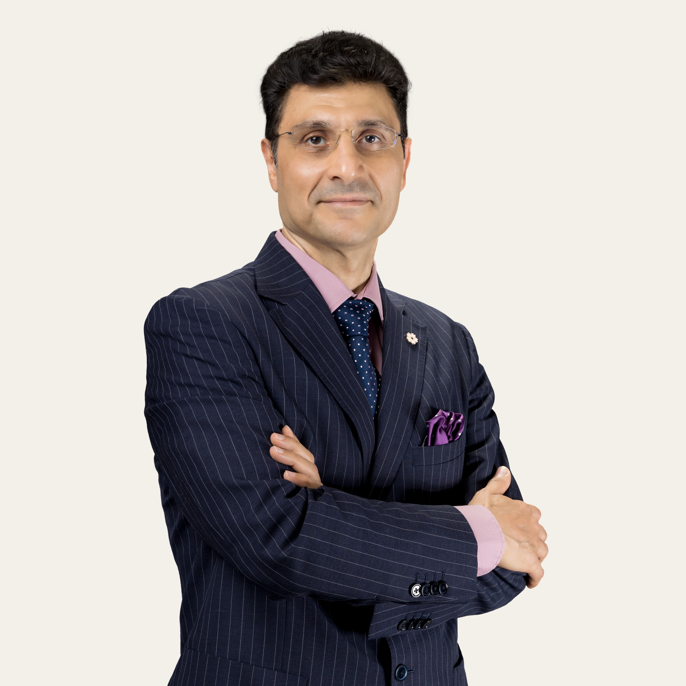

Systems you can feel.
Researching Virtual Reality, Haptics, and Human-Centered Computing at Qatar University. Twenty-five years of building haptic interfaces, immersive training environments and multimodal systems — at JAIST, Gifu, Iwate, and now Doha.
Associate Professor, Department of Computer Science and Engineering,
Qatar University, Doha, Qatar

Haptics, VR, and human-centered interaction
XReality Lab builds haptic interfaces, virtual and augmented reality systems, and multimodal training and accessibility tools — plus a laser graphics and visual-art practice dating back to 2001.
142Publications
50Projects
$4.93MResearch funding
45Students supervised
Top 2%Scientists worldwide, 2025
Selected work
Four of 50 projects. The rest, with filters by subject and era, are on the Research page.

Virtual Reality
Firefighting Simulation Training System Using Virtual Reality

Driving & Mobility
Driver Activity Recognition in Virtual Reality Driving Simulation

Current funding
5 active awards, $1.58M — of $4.93M across 31 awards since 2007.
| Period | Project | Role | Amount | Status |
|---|---|---|---|---|
| 2026-2027 | Visual-Haptics for Remote Robot Operation, Inspection & Physical InterventionQUCG-CENG-26/27-1140 | LPI | $120,000 | Active |
| 2026-2027 | Leveraging Immersive Virtual Reality for Culturally Tuned Recycling Infrastructure: A Socio-Spatial Analysis in Qatar's Urban EnvironmentQUCG-CENG-26/27-1042 | PI | $82,000 | Active |
| 2026-2027 | VR Disaster_Ready: Virtual Reality Disaster Preparedness Educational Training Module for Healthcare Professional StudentsQUCG-QU Health-26/27-974 | PI | $82,000 | Active |
| 2024-2027 | E-Scooter Simulator – A Virtual Reality (VR) Based Platform for Evaluating Riders' Behaviour and SafetyARG01-0517-230208 | PI | $715,077 | Active |
| 2022-2026 | The Future of Digital Citizenship in Qatar: a Socio-Technical Approach — GESI by DesignNPRP14C-37878-SP-470 (subproject of NPRP14C-0916-210015) | LPI | $580,778 | Active |
Recent publications
142 works, synced from ORCID.
-
2026From pixels to practice: a scientometric and systematic review of computer vision for clinical robotics Advanced Robotics
-
2026Virtual Assistant Avatars to Nudge Pro-Social Behavior: Exploratory Insights from a Co-Design Study International Journal of Human–Computer Interaction
-
2026Anonymized data for vibrotactile cue complexity and target acquisition in immersive virtual reality Zenodo
-
2026Leveraging Biometric Measurements in Virtual Reality for Improving Public Speaking Skills
-
2025Enhancing Telexistence Control Through Assistive Manipulation and Haptic Feedback Applied Sciences
-
2025A Multipurpose VR-Based Skill-Transfer for Robotic Platform Lecture Notes in Computer Science